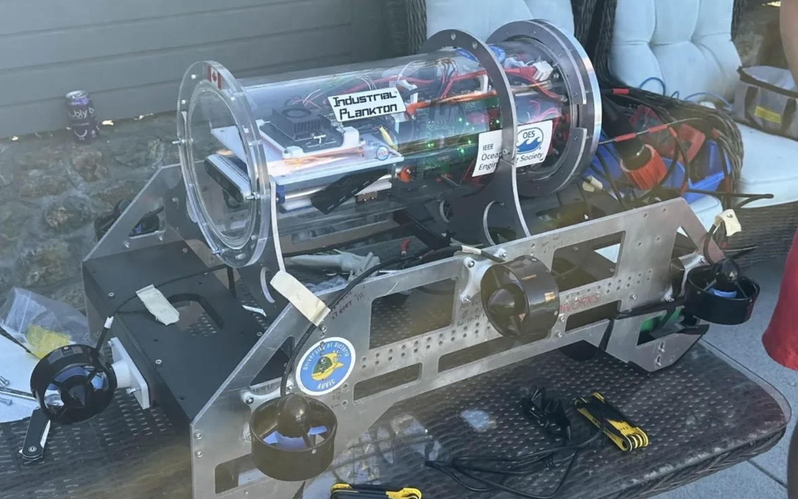

Kraken 2025

About the Kraken
The Kraken is the AUV that was used by the 2025 AUVIC team. This AUV was an extension of the work completed by the previous years team. Projects included a dropper, claw, torpedoes, as well as countless electrical and software updates.
Team Updates
All electrical inside of the main housing was upgraded with the implantation of custom motor controller and power distribution PCBs. The system was powered by two 6S Lipo batteries. An aluminum plate was designed as a heat sink to mount the ESCs properly so that the thrusters could be powered to their full power without the worry of overheating.
While keeping the same design philosophy as the original, the majority of the sub was either redesigned or modified to improve its functionality. A new UHMW sheet was manufactured to fit the newly designed attachments. The inner structure of the acrylic tube was reconfigured to mount the new PCBs and ESCs. A new back plate was manufactured to allow for more peripheral device connections. Small adjustments were made to the aluminum frame to adjust bracket placements to improve functionality of the submarine.
Development started on the Nvidia Jetson TX2, utilizing 2 USB camera modules, a Blue Robotics Bar02 pressure sensor for depth, and an XSens MTI 620 VRU for acceleration and orientation data. During this development, the TX2 was upgraded to the Nvidia Jetson Orin Nano and the cameras were upgraded to the Intel RealSense D435i (front facing) and D405 (bottom facing) cameras. These changes greatly improved the computer vision capabilities of the Kraken’s software architecture. With these upgrades, the software system was improved from 2023, with a functional closed loop control system, feeding sensor data into a PID controller for determining necessary thrust, and a basic computer vision system able to detect and locate competition course components. The communication between all of these systems was handled by the ROS2 framework, managing interprocess communication and concurrency.
Vehicle Parts
The 2025 Kraken was the first Kraken rendition to include a working Ball dropper. The 3D printed Ball dropper was able to drop two 3D printed markers weighed down by internal metal balls independently of each other from two enclosed solenoid assemblies. The solenoids retracted a pin allowing the markers to drop with the help of gravity.
The Power board received power from two large 6s batteries and stepped down to 16,12 and 5V.
The 2025 Kraken was the first Kraken rendition to include a Torpedo. The Torpedo was machined from two Delrin tubes with an internal loaded spring that could launch two independent 3D printed torpedoes with an internal metal rod for stability. The torpedo assembly used the same solenoid enclosure to launch the torpedoes. In testing the solenoid lacked the power to consistently launch the torpedoes safely and was not used at competition. We are hoping this design will be improved for use on Snappy in 2026.
The submarine was able to qualify at competition and independently find the travel through the gate. The submarine was also able to perform controlled barrel roles and turns.